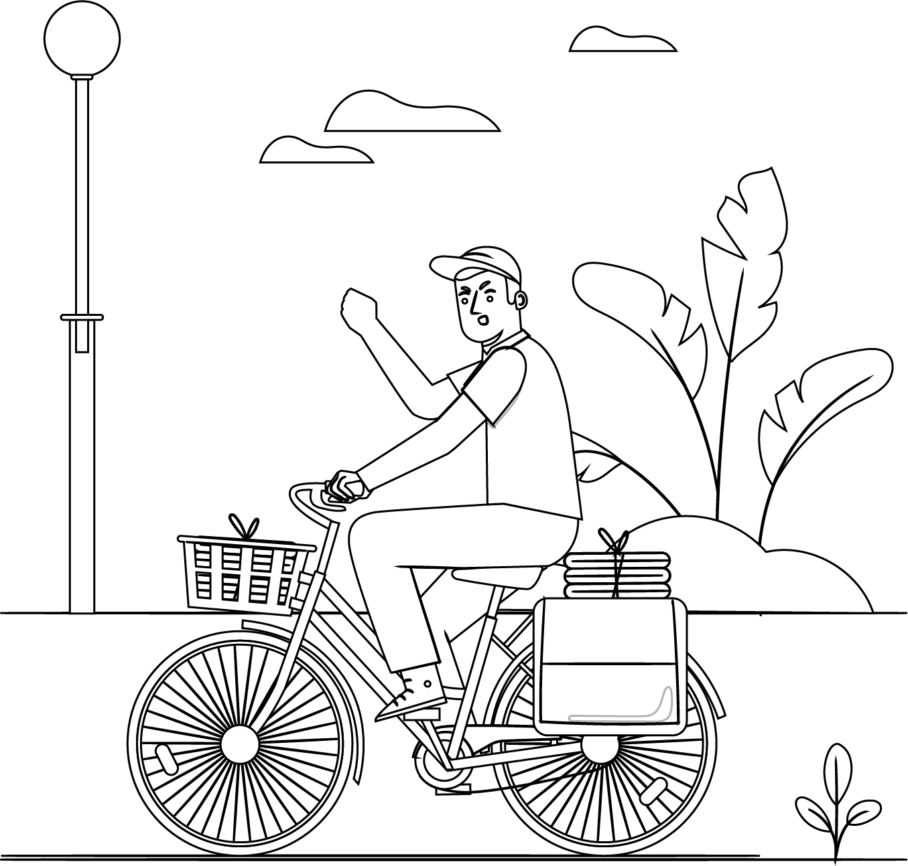

Madrid en bicicleta
Proyecto enfocado a mejorar el Sistema de notificación y gestión de incidencias del servicio de bicicletas públicas de Madrid.

Mi rol
Este proyecto fue realizado junto a mis compañeros Victor Gimeno Traver, Martín Gómez, Jorge Fernández, Sergio Jaramillo y Rubén Asensio. En su desarrollo, todos los integrantes del grupo llevamos a cabo una participación activa a lo largo de todo el proceso. Mi trabajo estuvo presente en las distintas fases del diseño de UX, implicandome tanto en la investigación, ideación, conceptualización y desarrollo.

El reto
Nos enfrentamos al reto de diseñar un producto o servicio que satisfaga las necesidades de los usuarios de BiciMad. La duración del mismo ha de ser de 1 meses.
Enfoque
Como metodología de desarrollo y proceso de diseño, nos basamos en el modelo del doble diamante. Comenzamos con una fase de investigación para ponerme en la piel del usuario. Seguido de la búsqueda de problemas y oportunidades, y finalmente explorar posibles soluciones basadas en el pensamiento divergente y convergente

INVESTIGACIÓN
En primer lugar se realizó una Investigación secundaria sobre los vehículos de movilidad personal de Madrid, seguido de una observación no participante del contexto de uso. Tras ello, salimos nuevamente a la calle para compartir la experiencia de los usuarios de BiciMad haciendo uso del servicio. Y finalmente, realizamos entrevistas de guerrilla a los usuarios y no usuarios de la calle.
SÍNTESIS
Tras la realización de la investigación, llevamos a cabo el volcado y análisis de los datos recogidos.

Algunos de los hallazgos más relevantes fueron:
Se identificó que el sistema de gestión de incidencias actual era el siguiente:
Se produce una incidencia/ avería.
Notificación de incidencia: Sillín girado.
El servicio técnico revisa y repara la bicicleta con el sillín girado.
Bicicleta reparada, lista para el uso.
ANÁLISIS
En base al análisis de los datos obtenidos, se detectaron aquellos Insight que nos ayudaron a establecer el foco del proyecto.

Los usuarios de BiciMad pierden mucho tiempo en examinar el estado de la bici antes de hacer uso de ella.

El uso de BiciMad produce una sensación de inseguridad e incertidumbre ya que los usuarios saben que posiblemente presente una avería.
El sistem actual de comunicación de incidencias no es eficaz ni eficiente.
IDEACIÓN
Tras la identificación de los insights , se establecieron los objetivos a cumplir cumo punto de partida de la ideación, estos son:
RESULTADO Como resultado, confeccionamos un nuevo sistema de gestión de incidencias:

1. Se produce una incidencia/ avería. 2. El usuario envía el aviso mediante la app o el tótem. 3. La Central BiciMad recibe la incidencia y envía la información a la estación. 4. El servicio técnico revisa y repara la bicicleta. 5. Bicicleta reparada. El usuario recibe bonificaciones para utilizar en futuros viajes.
El nuevo sistema de gestión de incidencias generado se caracteriza por la incorporación del color ámbar en las luces LED de las estaciones de bicicletas, que permiten y facilitan ver a simple vista si las bicis se encuentran en buen, medio o mal estado. Además, se incorporó una funcionalidad en la App para facilitar el reporte de incidencias. Trabajamos sobre las bases de biciMAD añadiendo el color Ámbar al sistema actual de avisos. Se divide la franja LED de las bases en 3 tramos para representar los niveles de incidencia. Cuando la gravedad es baja, sólo se iluminará el primer tercio de la tira LED. Si la gravedad es media, se iluminarán 2 tercios. Y finalmente si la gravedad es altase iluminará por completo la tira LED. En los tres casos, la luz se ilumina de forma intermitente. Irá acompañado de una leyenda en el lateral de cada base indicando a qué corresponde cada nivel de incidencia.